Veo-Act: How Far Can Frontier Video Models Advance Generalizable Robot Manipulation?
1. Quick overview of the paper
- Difficulty rating: ★★★★☆. It is necessary to understand the video generation model, inverse dynamics model, VLA strategy, robot control closed loop and experimental evaluation indicators.
- Keywords: Video generation model, robot manipulation, inverse dynamics model, VLA, hierarchical control, dexterous manipulation.
- Core contribution 1: The paper examines a specific question: how far can today's cutting-edge video generation models advance robot operation in a zero-human demonstration setting. This means that the paper does not just propose an architecture, but first experimentally evaluates the upper limit of the "video model + IDM" route.
- Core contribution 2: The paper finds that Veo-3 can generate task-level trajectories that are generally correct and follow instructions, but the low-level contact control accuracy is insufficient. This means that video models are more suitable as high-level motion priors rather than as direct replacements for control strategies.
- Core contribution 3: The paper proposes Veo-Act, which uses the video model as a high-level planner, VLA as a low-level executor, and uses the gate signal of the multi-head IDM to decide when to switch. This means that the system attempts to retain the generalization capabilities of the video model while leveraging the reactive contact control capabilities of the VLA.
2. Motivation
2.1 What problem should be solved?
The paper focuses on generalized robot operations in open environments: robots need to grasp and place in different object geometries, semantic instructions, and distractor scenarios. Existing VLA models rely on large-scale robot data, and action modalities need to be introduced when converting from VLM to VLA; the paper points out that this will make it difficult to completely retain the generalization knowledge of the pre-trained VLM.
The failure scenarios constructed in this paper include: the target object is not within the field of view of the wrist camera, there are interference objects with similar appearance, and non-target objects are located on the path of the robotic arm. These scenarios do not simply examine "whether it can be caught", but examine whether the strategy can still follow the target instructions under visual, semantic and path interference.
2.2 Limitations of existing methods
- VLA route: Models such as RT-2, OpenVLA, $\pi_0$, and $\pi_{0.5}$ map visual language input to actions, but the introduction of action modalities may weaken the retention of VLM pre-training knowledge; the paper uses this to explain the failure of VLA under semantic confusion and distribution changes.
- Video Model + IDM Route: This route maintains the native input and output interface of the video model and can better retain the generalization ability of the video model; however, the generated video is still not accurate enough in contact with rich low-level physical interactions, and IDM will amplify the control error after converting visual errors into actions.
- Contradictions of a single route: VLA is good at low-level closed-loop contact but has limited semantic generalization; video models are good at generating generally correct task-level trajectories but low-level control is unstable. The motivation behind Veo-Act is to divide the work between the two.
2.3 The solution ideas of this article
At the high level, Veo-3 generates a video trajectory to complete the task based on the initial image and language prompt; in the middle, the multi-head IDM converts the inter-frame changes into action clips and predicts the interaction gate; during low-level execution, the system follows the video planning action by default. When the gate indicates that it has entered the contact interaction stage, it switches to the VLA strategy to perform detailed operations, and then switches back to the remaining planning queue.
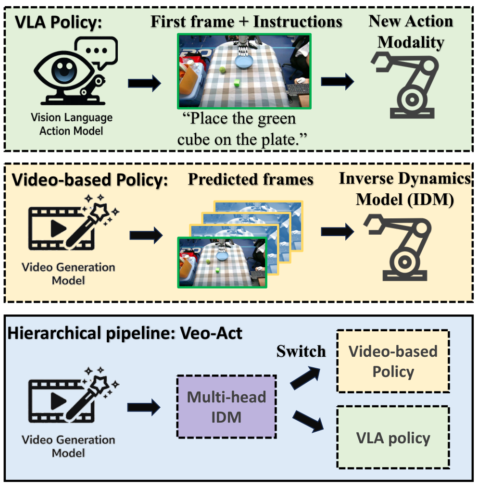
3. Summary of related work
3.1 Related work of the thesis self-description
| Related work lines | representative work | Positioning in the paper |
|---|---|---|
| Video generative models for policy learning | Sora, Veo, V-JEPA 2, Unified World Models, Vidar, VPP, AnyPos, TC-IDM | Video models contain physical priors such as object persistence, motion continuity, and coarse-grained collisions to generate visual plans; however, performance is constrained by video fidelity, especially in contact-rich dexterity operations. |
| Learning from Observation / IDM | LfO, VPT, Vidar, AnyPos, TC-IDM | IDM can map state or image transitions into actions, and can even be learned from unlabeled videos or play data; this article uses self-supervised random play to train multi-head IDM. |
| Vision-Language-Action Models | RT-2, OpenVLA, $\pi_0$, $\pi_{0.5}$ | VLA is an important route for current general robot strategies, but transforming VLM into an action output model will bring knowledge retention issues; this article uses $\pi_{0.5}$ as the baseline and low-level executor. |
3.2 Direct comparison with previous works
| Dimensions | VLA / $\pi_{0.5}$ | Video Model + IDM/VPP | Veo-Act |
|---|---|---|---|
| Core idea | Export actions directly from images, words and states. | A future video is generated and the action is restored by IDM or inverse model. | The video model is responsible for high-level trajectories, VLA is responsible for contact interaction, and IDM outputs actions and switching gates at the same time. |
| key assumptions | The trained action modality still retains the semantic generalization of VLM/VLA. | The video generated trajectories are physically consistent enough that IDM can reliably restore motion. | Video trajectories serve as task-level priors, but the exposure phase requires reactive low-level strategies. |
| Applicable scenarios | Closed-loop operations with sufficient training coverage, visible targets, and weak semantic confusion. | Simple interaction or coarse-grained task planning. | Semantic or perspective confounder obvious while requiring deft pick-and-place grabbing. |
| Experimental performance | The overall success of all simulation + real experiments is 102/228 = 0.45. | As the video baseline VPP in simulation, several conditions are lower than Veo-Act. | The overall success of all simulation + real experiments is 182/228 = 0.80. |
4. Detailed explanation of method
4.1 Method overview
The data flow of Veo-Act is: initial observation $I_0$ and task prompt → Veo-3 generates future frame sequence $I^{*}_{0: n}$ → multi-head IDM performs inverse dynamics on adjacent frames, outputs action fragment $a^{*}_{0: n-1}$ and gate signal → smoother obtains $\bar{a}^{*}_{0: n-1}$ → gradually pops from the action queue during execution; if real-time gate $G_t$ If it continues to be higher than the threshold $\tau$, switch to the low-level VLA policy $\pi_{\mathrm{VLA}}$; after the gate is lowered, cut off the interaction interval and restore the planning queue.
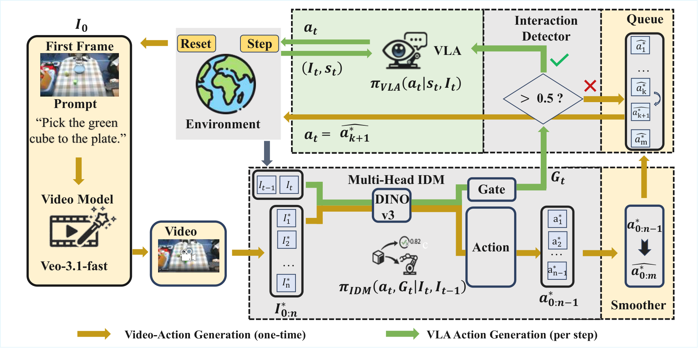

4.2 Method evolution
VLA direct control → Input the current observation and language, and directly output the action; the problem is that it is easy to follow the wrong object or path by mistake under confounder.
Video model + IDM → First generate a video of the task completion, and then resume the action; the advantage is that the semantics and physical priors of the video model are retained, but the problem is that the contact control accuracy is insufficient.
Veo-Act → Use the video model to plan "where to go and where to pass", use VLA to complete "how to stabilize the grasp and release during contact", and use IDM gate to connect the two control modes.
4.3 Core design and mathematical derivation
$$I^{*}_{0: n}=\{I^{*}_1, I^{*}_2, \ldots, I^{*}_n\}$$
Here $I_0$ is the initial observation, $I^{*}_k$ is the $k$th synthesized future frame, and $n$ is the number of sampled frames. The function of this formula is not to directly control the robot, but to convert the language target into a visuo-motor prior that can be digested by IDM.
$$(a_t, G_t)=\pi_{\mathrm{IDM}}(I_{t-1}, I_t, s_t)$$
| $I_{t-1}, I_t$ | Two adjacent frames of images represent changes in visual status. |
| $s_t$ | Robot state characteristics; 21-dimensional single-arm state was recorded in the experiment. |
| $a_t$ | The recovered executable action; running the entire generated video can result in $a^{*}_{0: n-1}$. |
| $G_t\in[0, 1]$ | The output of the interaction detector, indicating whether the current should be handed to the lower VLA. |
Intuitively, the action head is responsible for "how the robot should move between these two frames", and the gate head is responsible for "whether it has entered the grabbing/contact stage that requires reactive strategies." It is divided into two MLP heads because the numerical distributions of action regression and binary classification gate are different.
$$\mathcal{L}=\lambda_{\text{act}}\mathcal{L}_{\text{act}}(a_t, \hat a_t)+\lambda_{\text{gate}}\mathcal{L}_{\text{gate}}(G_t, \hat g_t)$$
The text states that the action head uses Huber loss and the gate head uses Binary Cross Entropy. The appendix further gives the IDM training target: $\mathcal{L}_{\mathrm{IDM}}=\lambda_{\mathrm{act}}\sum_d d(a_{t, d}, \hat a_{t, d})+\lambda_{\mathrm{gate}}\mathrm{BCE}(G_t, \hat g_t)$, where $d(\cdot)$ is the weighted Smooth L1.Appendix: IDM Training
Supplementary derivation: Why weighted Smooth L1 is suitable for motion regression
$$\bar a^{*}_{0: n-1}=\mathrm{Smoother}(a^{*}_{0: n-1}), \qquad \mathcal Q=\{\bar a^{*}_1, \ldots, \bar a^{*}_m\}$$
The default action during execution is $a_t=\bar a^{*}_{k+1}$. The appendix specifies the smoother as follows: detecting local extreme key points in key dimensions, and doing centered moving-average in the adjacent key point interval; key points remain unchanged; key point actions can be held for an additional $H$ step; and finally, lower bound clamp, $m=0.13$ is made for the specified dimension $d_c=2$.Appendix: Action Smoother
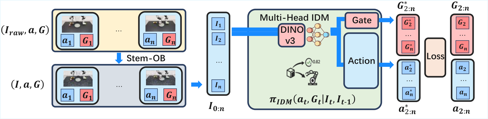
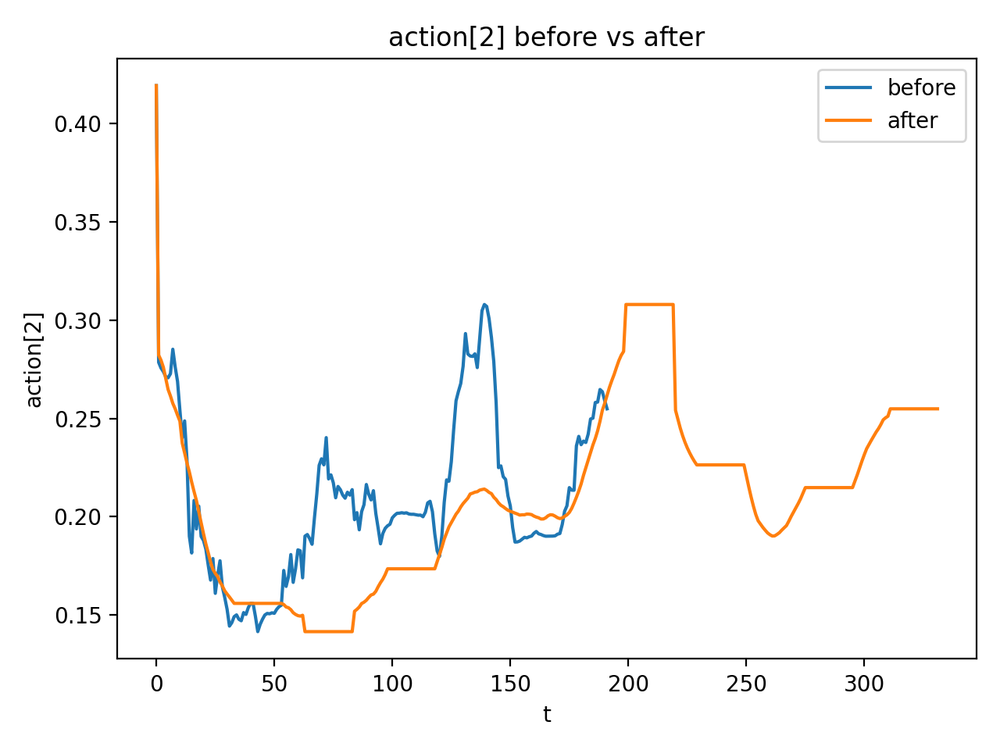
4.4 Implementation Points (For reproducibility)
| module | Implementation details | Source |
|---|---|---|
| Video prompt | prompt clearly requires the robot to distinguish between target objects and similar objects, non-target objects to remain motionless, the target to remain in place before being grabbed, the viewing angle to remain unchanged, the movement to be smooth and natural, and the container not to move. | Appendix: Video-Generation Prompt Construction |
| visual encoder | DINOv3 ViT-B/16, embedding 768, depth 12, heads 12, patch size 16, using patch token features of two frames to splice into 1536 dimensions. | Appendix: IDM Training |
| IDM data | The main text contains 300k simulated frame-pairs, plus 100k simulated random-motion and 150k real samples; the appendix writes about using 550k frame-pairs for training. | Text §5.1 + Appendix |
| noise enhancement | Running Stem-OB inversion on the RGB trace produces noisy stem observations: 50 denoising steps, 10 inversion steps. | Appendix: IDM Training |
| switching logic | Maintain gate history $\mathcal H_G$; enable VLA after stable_high; close VLA after stable_low, and use truncate/drop operations to skip the queue segment corresponding to the high gate. | Appendix: Algorithmic Variants |
Hierarchical Veo-Act inference
1. reset environment and sample task
2. build video-generation prompt from task
3. generate future frames I*_{0:n} with Veo-3
4. run IDM.action over generated frames to get a*_{0:n-1}
5. smooth actions and enqueue them into Q
6. for each real timestep:
- observe current image/state
- compute gate G_t = IDM.gate(I_{t-1}, I_t)
- if gate stays low: execute next planned action from Q
- if gate stays high: execute low-level VLA action
- if gate returns low: prune high-gate queue segment and resume plan
5. Experiment
5.1 Experimental setup
| Project | content |
|---|---|
| platform | 7-DoF robotic arm + 12-DoF dexterous hand; two RGB cameras: global camera and wrist camera. Video generation and IDM use the global camera; low-level policies can use the wrist camera after switching. |
| Simulation | Use IsaacLab to build high-fidelity simulation environments that correspond to real platforms. |
| Task | Grab the specified target object and put it into the specified container. |
| Simulation founder | Invisible wrist camera, interference from similar objects, pass-by interaction. |
| real robot cofounder | Similar object interference, pass-by interaction, and more complex semantic instructions. |
| Baselines | $\pi_{0.5}$ is used as VLA baseline; the video method VPP is also compared in the simulation. Veo-Act uses $\pi_{0.5}$ as the low-level policy. |
| code repository | Searching by "Veo-Act code github" and "2604.04502 github", no clear official repository was found. |
training configuration
| Hyperparameters/Configuration | value | Source |
|---|---|---|
| IDM training sample | 550k frame-pair samples | Appendix: IDM Training |
| IDM training iteration | 85, 000 iterations | Appendix: IDM Training |
| IDM hardware | 4 NVIDIA Ampere-series 80 GPUs, ~10 hours | Appendix: IDM Training |
| IDM batch size | 8 per GPU, total batch size 32 | Appendix: Table IDM Training |
| IDM optimizer | AdamW, $\beta=(0.9, 0.999)$, $\epsilon=0.01$, weight decay 0.01 | Appendix: Table IDM Training |
| IDM learning rate | DINO: $5\times10^{-5}$; other modules: $5\times10^{-4}$ | Appendix: Table IDM Training |
| IDM scheduler | Cosine scheduler, warmup 8, 500 steps | Appendix: Table IDM Training |
| $\pi_{0.5}$ training | batch size 32, initial LR $2.5\times10^{-5}$, training 40K iterations, using official implementation and LR scheduler | Appendix: Pi0.5 Training |
5.2 Main results
| settings | Baseline overall | Veo-Act overall | The conclusion given by the paper |
|---|---|---|---|
| Simulation: wrist-camera invisible / Experimental | 10/30 = 0.33 | 20/30 = 0.67 | Veo-Act improves to ~2x when the target is out of view of the wrist camera. |
| Simulation: similar-object distractors / Experimental | 12/30 = 0.40 | 28/30 = 0.93 | Veo-Act alleviates semantic confusion of similar objects. |
| Simulation: pass-by interaction / Experimental | 0/30 = 0.00 | 14/30 = 0.47 | Baseline nearly fails, Veo-Act regains partial mission capability. |
| True: similar-object distractors | 8/16 = 0.50 | 12/16 = 0.75 | Improvements are also achieved on real platforms. |
| True: pass-by interaction | 2/13 = 0.15 | 11/13 = 0.85 | Overall success increased by 5.7 times. |
| Reality: richer semantics | 2/19 = 0.11 | 15/19 = 0.79 | The overall success under complex semantic instructions is increased by 7.2 times. |
Paper summary: Under the Experimental conditions of the simulation experiment, the baseline overall success is 22/90 = 0.24, and the Veo-Act is 62/90 = 0.69; the summary of all overall successes in simulation + real life, the baseline is 102/228 = 0.45, and the Veo-Act is 182/228 = 0.80.
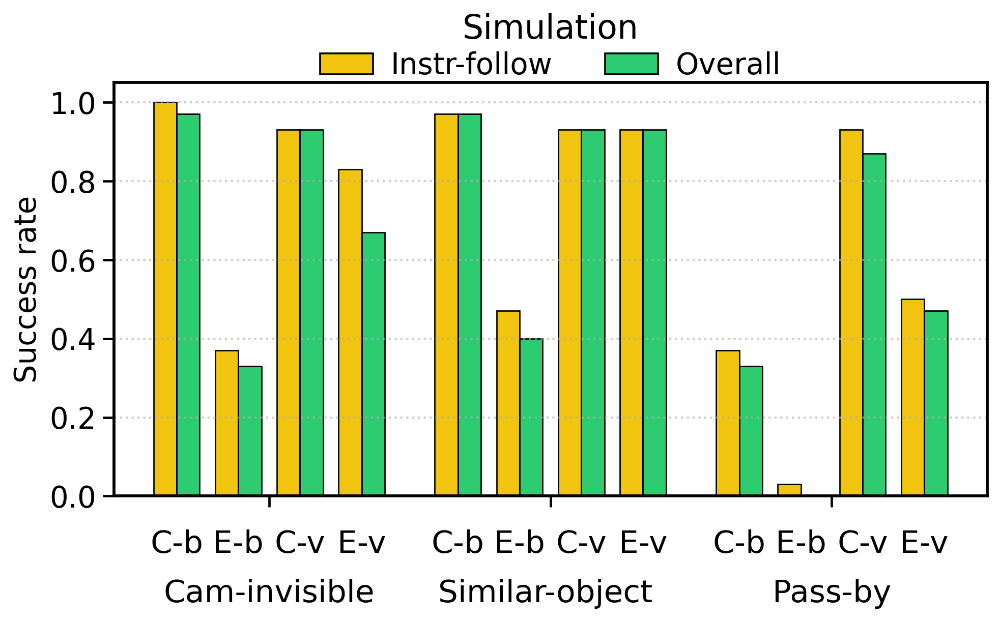
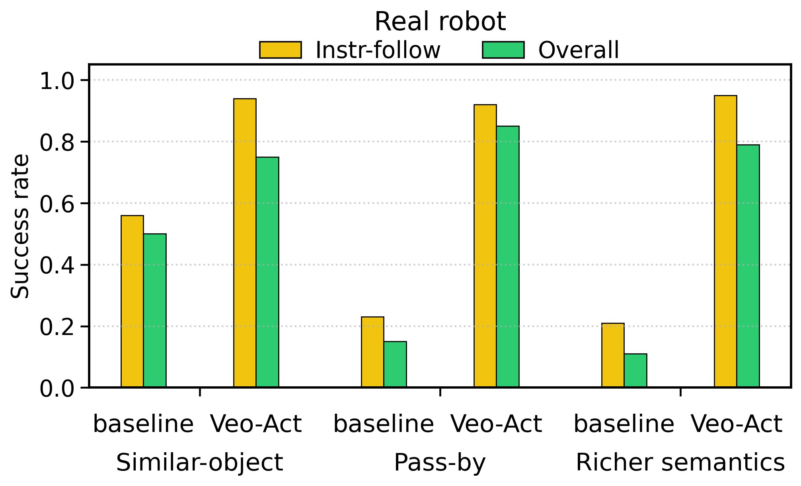
5.3 Ablation experiment
| Variants | Instruction-following | Overall | Verification purpose |
|---|---|---|---|
| ResNet backbone | 22/30 = 0.73 | 17/30 = 0.57 | Testing whether DINOv3 visual representation is important. |
| Without noise | 22/30 = 0.73 | 16/30 = 0.53 | Testing the effect of STEM-OB noise enhancement on robustness. |
| Single head | 25/30 = 0.83 | 17/30 = 0.57 | Testing the impact of a single action head and not learning the interaction detector separately. |
| Ours | 25/30 = 0.83 | 20/30 = 0.67 | The multi-head design improves overall success without compromising instruction-following. |
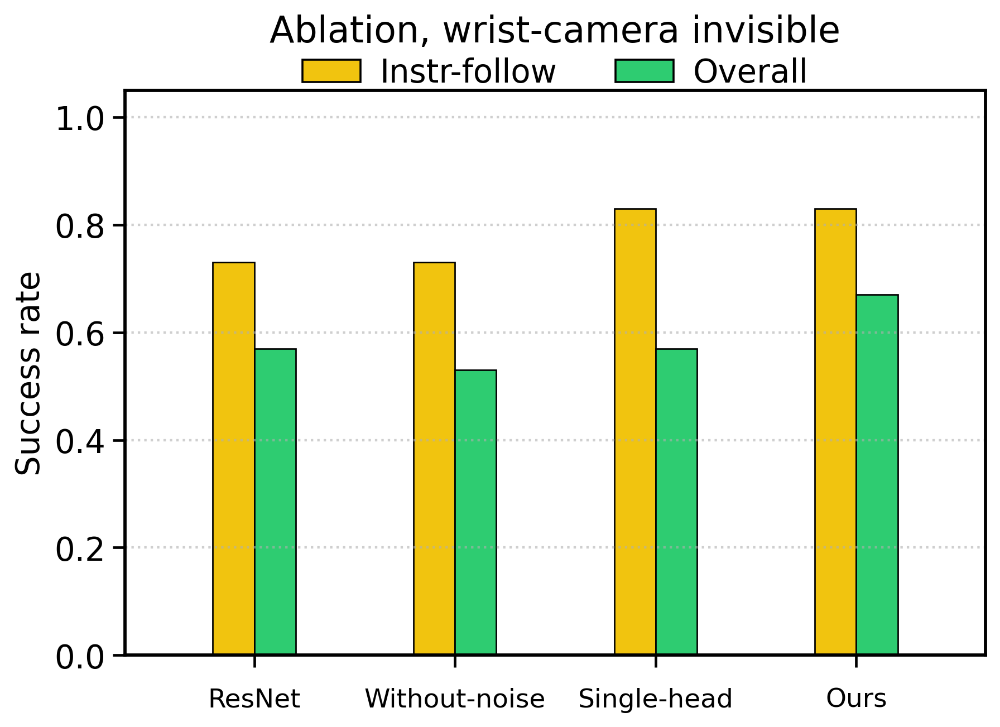
5.4 Supplementary experiments (from appendix)
- Four categories of detailed settings: The appendix gives qualitative illustrations of invisible object, pass-by, similar-object distractors, and richer semantics, and supplements these contents with experimental setup instructions.
- Pure IDM results: The appendix reports the results of pure IDM under the same protocol for isolating the ability of video prior + IDM itself; pure IDM has been explained as a variant in the main methods section.
- Failure analysis: The appendix lists the types of failures in the experimental setting as a source of information on the limitations and boundaries of §6.
- Action smoother visualization: The appendix shows a single action dimension before and after smoothing, illustrating the actual effect of the smoother.
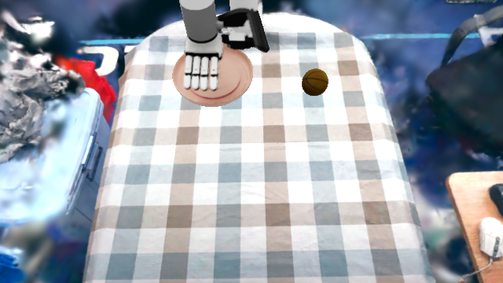
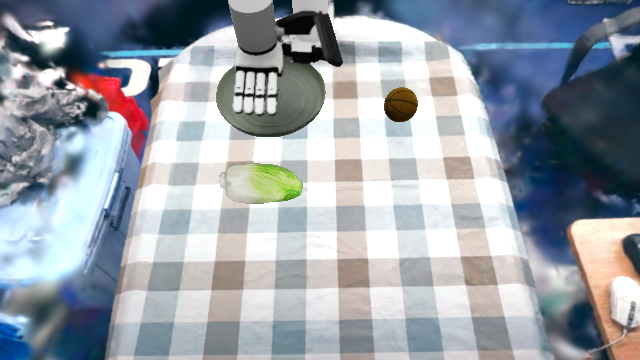
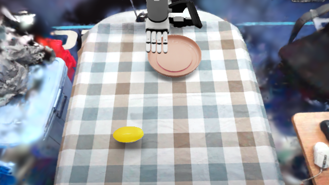
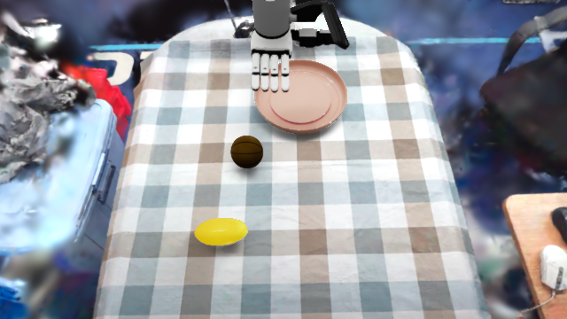
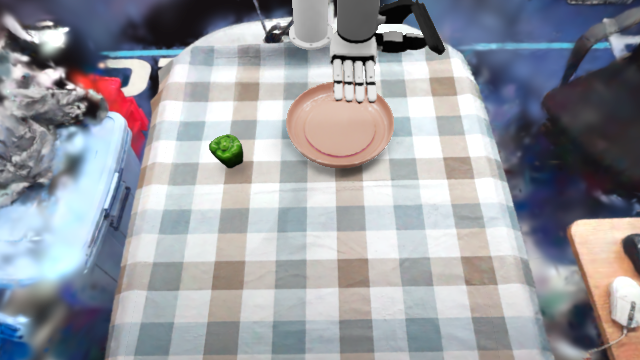
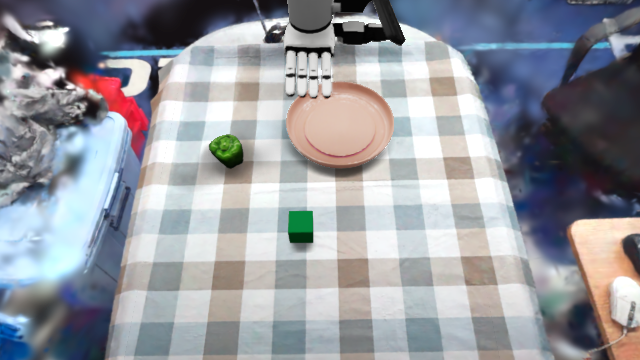
6. Analysis and Discussion
6.1 Analysis and explanation of the results given in the paper
- The paper explains that the baseline decreases systematically under Experimental conditions, indicating that the wrist camera field of view, similar object interference and pass-by interference do expose the instruction-following failure modes of VLA.
- The paper attributes Veo-Act's improvement to the generally correct task-level trajectories generated by the video model and the closed-loop recovery capabilities provided by level switching during the contact phase.
- The paper points out that multi-head design improves overall success because joint learning of action prediction and interaction detection is more conducive to stage switching and end-to-end execution.
6.2 Limitations of the author's statement
It is clearly pointed out in the text and conclusion of the paper that the current video model cannot accurately complete most low-level contact-rich operations: Veo-3 + IDM can generate generally correct trajectories, but the low-level control accuracy is insufficient, especially in the physical contact stage. The paper also points out that this route is constrained by the fidelity of the underlying video generation model, and the limitations are more obvious in high-dimensional action spaces and multi-point contact dynamics scenarios such as dexterous operation.
The appendix failure analysis is included here: failures mainly correspond to target identification, path interference, contact execution and low-level switching in the confounded setting. Since the paper does not expand these failures into new method suggestions in the main text, this report only objectively records them as applicable boundaries.
6.3 Applicable boundaries and discussions clearly stated in the paper
- Applicable conditions: The video model can generate approximately correct task-level trajectories, the IDM can recover executable actions from inter-frame changes, and the low-level VLA can handle the contact phase.
- Not applicable or risky scenarios: Video predictions were significantly inaccurate in contact dynamics, target/container relationships were generated incorrectly, and gate detection was unstable leading to premature or late switching.
- Future trends: It is concluded that as video generative models continue to improve, video models can become valuable components in generalized robot learning; this is stated as a summary of the paper and not as additional recommendations of this report.
Self-acceptance
Completed: Analyze the title, author, abstract, text structure, methods, experiments and appendices.
Completed: The prompt, algorithm variants, pure IDM, failure analysis, smoother, IDM/$\pi_{0.5}$ training details in the appendix have been integrated into the corresponding chapters.
Completed: Standalone PNG/JPG image copied; main PDF image converted to PNG and embedded.
Note: No clear official code repository was found; the report has been marked according to the search results.